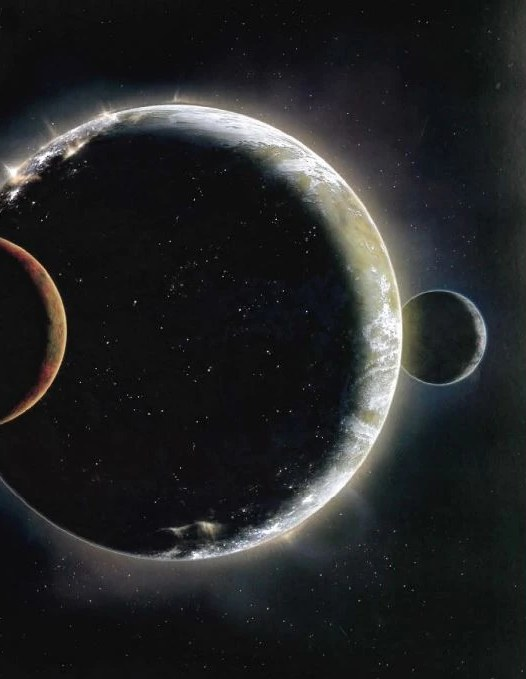
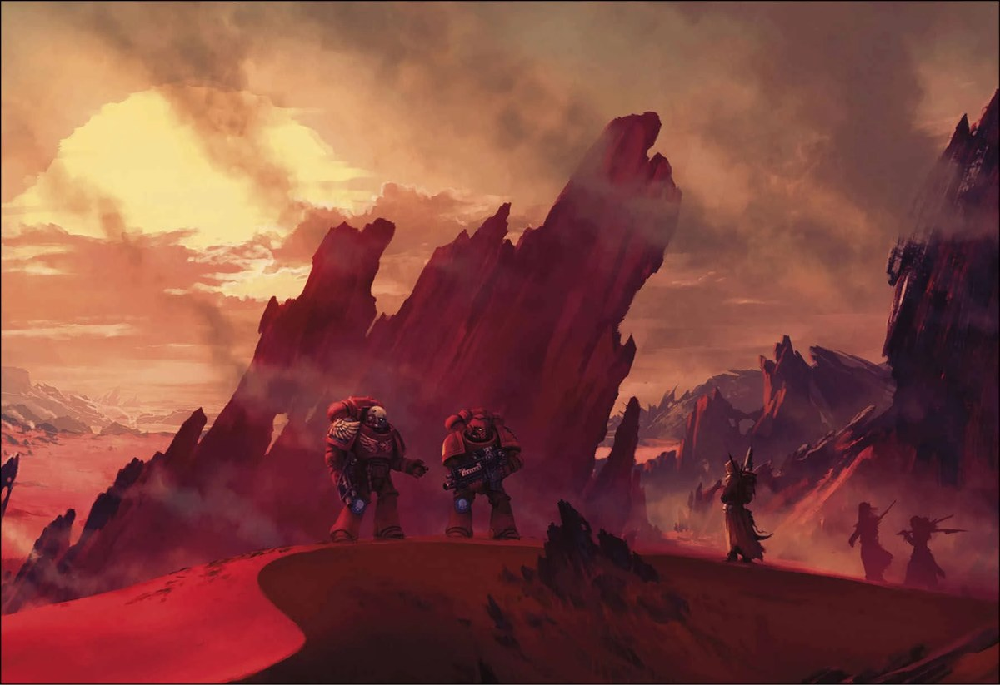

Baal
| Baal | |
|---|---|
| Homeworld of the Blood Angels | |
 Baal with its moons Baal Prime and Baal Secundus, from the Chapter's star-charts Artwork © Games Workshop | |
| System | Baal System |
| Segmentum | Segmentum Ultima |
| Classification | Desert world; Chapter world. Moons: feral worlds |
| Ruler | Chapter Master of the Blood Angels (Commander Dante), Lord Regent of the Imperium Nihilus |
| Population | c. 122,000, including the moons, after the heavy losses of the Devastation of Baal |
| Seat | The Arx Angelicum |
| Tithe grade | Aptus Non (exempt) |
| Moons | Baal Prime; Baal Secundus |
| Notable features | Arx Angelicum; Holy Sepulchre of Sanguinius; Skyfall starport; Ruberica, the Heart of Baal |
Baal is a desert world of the Segmentum Ultima and the homeworld of the Blood Angels. With its two moons, Baal Prime and Baal Secundus, it forms the Baal System, the domain of the Chapter. The fortress-monastery of the Blood Angels, the Arx Angelicum, stands on the planet, and the tomb of the primarch Sanguinius lies within it. The Chapter recruits from the tribes of the two moons, the descendants of the people among whom Sanguinius grew up.[1][2]
The planet and its moons were once fertile worlds of a refined civilisation, ruined by war at the end of the Dark Age of Technology. In 999.M41 the system was invaded by Hive Fleet Leviathan in the Devastation of Baal and was saved by the arrival of Roboute Guilliman's Indomitus Crusade. Since then, the Chapter Master Dante has made Baal the seat of his regency over the Imperium Nihilus.[3]
History
[edit]The age of the artisans
[edit]In the Dark Age of Technology, Baal and its moons all had breathable atmospheres. Baal itself was a world of red deserts, but its moons were garden worlds whose people became famous as artisans. They carved whole mountains into statues of their rulers and gods, and raised colonies and monuments on the deserts of Baal. Some of these ruins survive, half buried in sand.[2]
Ruin
[edit]The civilisation of Baal was destroyed at the beginning of the Age of Strife. Cut off by warp storms and facing famine, the people of the more populous Baal Secundus demanded that Baal Prime, which held the system's great orbital facilities, be evacuated and given to them. Baal Prime refused, and in the war that followed the orbital station fell onto its surface. Both moons were devastated by nuclear and biological weapons: cities became fields of glass, seas became poisoned lakes and grasslands turned to desert.[2]
The survivors became nomads and scavengers. Over the following centuries radiation and poison bred mutants among them, many of them cannibals, and the few who kept their humanity lived in small tribes, travelling in salvaged vehicles and protecting themselves with patched radiation suits. Imperial sources describe the moons in this age as among the most desperate places in human space.[2]
Sanguinius
[edit]The capsule carrying the infant Sanguinius came down on Baal Secundus, at the place the Blood Angels call Angel's Fall. He was found by a tribe called the Blood, who took him for a sign from heaven. He grew quickly, with white wings on his back, and became the leader of the tribes, uniting them against the mutants and making the moon habitable again. When the Emperor reached Baal, he found the primarch at the head of the tribes. Sanguinius took command of the IX Legion, which made Baal its home and began to recruit from the tribes of the moons.[4][2]
From the Heresy to M41
[edit]Sanguinius was killed by Horus aboard the Warmaster's battle barge at the end of the Siege of Terra in 014.M31. His body was returned to Baal and placed in the Golden Sarcophagus in the Holy Sepulchre, where it lies still. The Blood Angels became a Chapter in the Second Founding, and a human colony was re-established on Baal Prime soon after the Heresy.[5][2]

For ten thousand years Baal was the centre of the Blood Angels and of their many Successor Chapters, who gathered there in times of danger. The Holy Sepulchre was attacked during the Chapter's long struggle with its own curse, and was defended by the Blood Angels and their Successors together. The Chapter's records of this and other events on Baal are guarded closely, since they touch on the Red Thirst and the Black Rage.[2]
The Devastation of Baal
[edit]In 999.M41 Hive Fleet Leviathan advanced on Baal. Dante sacrificed the shield worlds of the Cryptus System to delay it, gathered the Blood Angels and their Successors, and sent strike forces to wear down the splinter fleets. The hive fleet was nonetheless so large that it blotted out the stars when it reached the system. The defenders on Baal Prime were annihilated, Baal Secundus was overrun, and the Blood Angels and their allies made a fighting retreat on Baal itself.[3]
The opening of the Great Rift cut the system off and the warp storms struck it. As Dante's last perimeter broke, the storms cleared and the hive fleet in orbit was found to have been destroyed by Guilliman's arriving fleet. The surviving Tyranids on the surface were then destroyed. The planet's surface was stripped by the invasion, and Baal Secundus was left scoured of much of its life. The battle is described in the article Devastation of Baal.[3]
The Era Indomitus
[edit]Guilliman brought Primaris Space Marines of Blood Angels gene-seed to Baal, which replenished the depleted Chapter and its Successors. He also named Dante Lord Regent of the Imperium Nihilus, and Dante has since set out to make Baal its capital. The orbital station Skyfall has been rebuilt with thousands of new jetties and docks, and now serves as the base of the Chapter's Fleet Nihilus and as a shipyard where warships are built. Tech-priests from the forge worlds of the Imperium Nihilus have been brought to work there. The last Tyranids on Baal Secundus were hunted down by Blood Angels companies, including newly integrated Primaris warriors.[3]
Geography
[edit]
Baal is a planet of rust-red deserts, rocky badlands and mountains, with a thin atmosphere and scorching days. It is scarcely inhabited outside the Blood Angels' fortresses, though mutants and feral animals live in its wastes. Named regions include the Bloodwise Mounts, the Demitian Badlands, Verdis Elysia and the Waste of Enod. Beneath the surface lies Ruberica, the Heart of Baal, a cavern of bloodstone pillars that the planet's people hold sacred and that is said to repair itself when damaged.[2]
The Arx Angelicum, the fortress-monastery of the Blood Angels, is a vast complex of spires, halls and shrines. It holds the Holy Sepulchre, the Golden Sarcophagus of Sanguinius, the Chapter's reliquaries, and the Red Grail, which contains the primarch's blood.[2]
Baal Prime, known to its people as Baalind, is the smaller and colder moon. Its surface was wrecked by the fall of the orbital station at the start of the Age of Strife. Baal Secundus is the larger moon and the more habitable, a land of radioactive deserts and ruins where the tribes of the Blood live. Both are classified as feral worlds.[2]
Skyfall is a vast orbital starport and void fortress above Baal, crowned by the statue of an angel about thirty kilometres high holding a sword above its head. It is commanded by the captain of the Chapter's Eighth Company, called the Lord of Skyfall.[2][3]
Society
[edit]The people of Baal's moons live in nomadic tribes, travelling between ruins and wells in salvaged vehicles and fighting the mutants and one another. Their lives are short and hard, and their culture is shaped by reverence for the angels who come from the sky. The Blood Angels hold a recruiting trial every few years: young men of the tribes travel to a place of testing on Baal Secundus, where those who survive a contest of endurance and combat are taken away to the Arx Angelicum. Few return.[2]
The tribes preserve fragments of the artistic tradition of their ancestors, and the Blood Angels themselves are known as artists, sculptors and scholars, a trait the Chapter regards as part of its inheritance from Baal. The Chapter's serfs and the population of Skyfall make up most of the remainder of the system's people. Baal has no planetary governor, and the Chapter Master rules the system directly.[2][1]
Timeline
[edit]| Date | Event |
|---|---|
| Age of Technology | Baal and its moons Baal Prime and Baal Secundus are settled and prosper under Earth-like skies.[a] |
| End of the Age of Technology | A civil war between the moons unleashes nuclear and viral weapons that poison Baal Prime and Baal Secundus.[b] |
| Age of Strife | Baal is isolated by Warp storms, and its surviving people become nomadic mutant tribes.[c] |
| Late M30 | Sanguinius and the IX Legion join the Great Crusade; the Blood Angels are founded from his gene-seed.[d] |
| M31 | During the Horus Heresy, Baal is a Loyalist hub under Warden Arkhad while Sanguinius is on the Signus Campaign.[e] |
| 008–013.M31 | Baal becomes a sanctuary for Space Marines fleeing the rebellion of Horus, who besieges it; every attempt to take the world is rebuffed. |
| Early M32 | A human colony is re-established on Baal Prime, and the Blood Angels recruit from the tribes of the Blood.[f] |
| c. 999.M41 | The Devastation of Baal: Hive Fleet Leviathan attacks Baal, and five Chapter Masters fall in the battle at the Dome of Angels. |
| 999.M41 | Hive Fleet Leviathan is cut off by the Great Rift and the Tyranids on Baal Prime are destroyed; the moon is left sterile. |
| 999.M41 | Roboute Guilliman and the Indomitus Crusade reach Baal and clear it of the Tyranid threat. |
| Early M42 | Sergeant Carleon of the Blood Angels assists in the purge of Baal Secundus of Tyranid remnants.[g] |
| Early M42 | The Blood Angels rebuild the Arx Angelicum and Skyfall and resume recruitment from the tribes of the Blood. |
See also
[edit]
Notes
[edit]- ^ Estimated; no record gives an exact year.
- ^ Estimated; no record gives an exact year.
- ^ Estimated; no record gives an exact year.
- ^ Estimated; no record gives an exact year.
- ^ Estimated; no record gives an exact year.
- ^ Estimated; no record gives an exact year.
- ^ Estimated; no record gives an exact year.
References
[edit]- ^ a b Codex Supplement: Blood Angels (9th Edition), pg. 22. Games Workshop. Haley, Guy. Dante - Darkness in the Blood (novel). Black Library, Chs. 11, 15, 17-19, 21.
- ^ a b c d e f g h i j k l m Haley, Guy. Devastation of Baal (novel). Black Library, Chs. 11-12, 16, 19, 30. Codex Adeptus Astartes - Blood Angels (8th Edition), pp. 10-11. Games Workshop.
- ^ a b c d e Psychic Awakening: Blood of Baal (8th Edition), pg. 20. Games Workshop. Haley, Guy. Dante (novel). Black Library.
- ^ Swallow, James. Red Fury (novel). Black Library. Warhammer 40,000: Rulebook (8th Edition), "Devastation of Baal", pp. 52-53. Games Workshop.
- ^ Codex: Blood Angels (5th Edition), pp. 25-28. Games Workshop. Codex: Angels of Death (2nd Edition), pp. 16-19. Games Workshop.